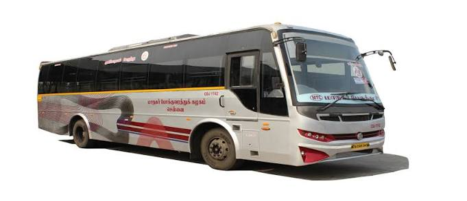

Tamil Nadu State Transport Corporation Ltd. - (TNSTC) is a government owned public transport bus operator in Tamil Nadu, India.[2] It operates Intercity bus services to cities within Tamil Nadu, and from Tamil Nadu to its neighbouring states.
Virugambakkam, a bustling suburb in Chennai, is well-connected primarily by MTC (Metropolitan Transport Corporation) buses. While TNSTC primarily handles inter-city travel, MTC operates the local transit network. Popular local routes passing through Virugambakkam's major stops (like Elango Nagar and Margin Free Super Market) include: